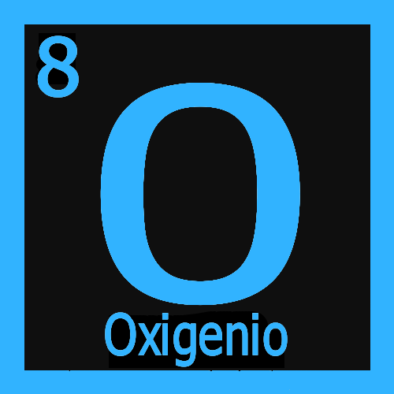
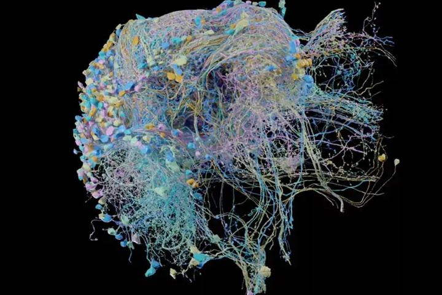

 que é ciência?

Como é compreendida
Comunmente é conhecida e mal interpretada como um ramo composto apenas de pessoas super dotadas e inteligentes. As representações sempre envolvem homens de jaleco balançando tubos de ensaio, ou considerado pelas pessoas como pessoas que querem desafiar a fé alheia.

Mapa neuronal de um cerebro humano
O que é de fato
A ciência nada mais é do que uma forma do ser humano tentar compreender o mundo a nossa volta, não é a ferramenta mas sim o metodo. É a busca pelos "porquês" de tudo, atravez do metodo ciêntifico. Ele é um corpo de conhecimentos sistematizados que são adiquiridos atravez de observação, identificação, pesquisa e explicação de determinadas categorias de fenômenos e fatos. Em outras palavras, ela é a responsavel por estudar o comportamento e estrutura do mundo fisico e natural.